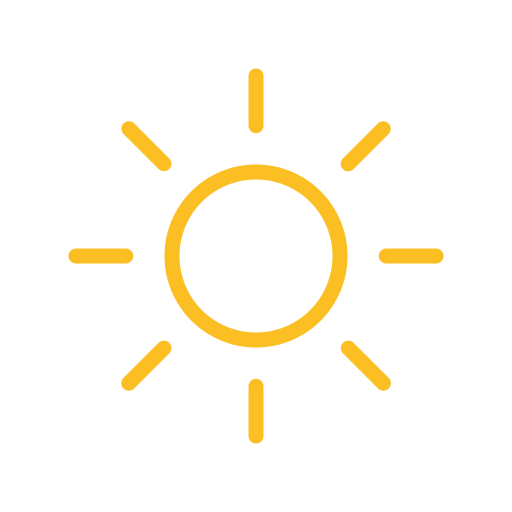

天気アイコン置き換え案 — Meteocons
天気サイトでも広く使われる Meteocons（Bas Milius作 / MITライセンス・無料） を採用。
現行の絵文字は端末フォント依存で見え方がバラつきますが、Meteoconsは統一デザインのSVGで意味が一目で伝わります。
※このアイコンはアニメーションSVGです（雲が流れる・雨が降る等）。
検証メモ： Meteoconsのカラー(fill)は白〜淡色で描かれた「淡色設計」のため、現行ウィジェットのような明るい背景だと雲が薄く見えにくいことを確認しました（Playwrightで実描画チェック済み）。
そこで 案C：天気エリアを青空グラデにして白アイコンを乗せる 案を追加しています。これが最もクッキリ見えます。
明るい背景のまま使うなら、輪郭のある 案B：線画(line) が無難です。
① 現行絵文字 ↔ Meteocons 比較（WMOコード別）
| 天気（WMOコード） | 現行(絵文字) | 案A：カラー(fill) | 案B：線画(line) |
|---|
快晴
code 0 |
☀️ |
 |
 |
晴れ
code 1 |
🌤️ |
 |
 |
一部曇り
code 2 |
⛅ |
|
|
曇り
code 3 |
☁️ |
 |
 |
霧
code 45, 48 |
🌫️ |
 |
|
霧雨
code 51–57 |
🌦️ |
|
|
雨
code 61–67 |
🌧️ |
|
|
にわか雨
code 80–82 |
🌧️ |
 |
|
雪
code 71–77 |
🌨️ |
|
|
にわか雪
code 85, 86 |
🌨️ |
|
|
雷雨
code 95–99 |
⛈️ |
 |
 |
② 実際のウィジェットに適用したイメージ
案A：カラー(fill) ／ 例: 晴れ → 曇り → 雨
案B：線画(line) ／ 例: 晴れ → 曇り → 雨
案C：青空背景＋カラー(fill) ／ 例: 晴れ → 曇り → 雨 ★おすすめ
実装メモ：取得済みSVGは weather-icons/fill/ と weather-icons/line/ に保存済み。
本体では WMO_ICON の絵文字マップを、選択スタイルのファイル名マップに差し替え、
<span class="weather-emoji">絵文字</span> を
<img class="weather-emoji" src="weather-icons/fill/＜名前＞.svg"> に変えるだけで適用できます。